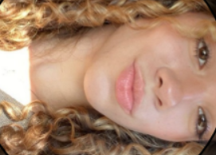

Sobre Mim
Olá! Meu nome é Paula Sbrissa Gianotto e sou uma futura professora de história, apaixonada por política. Estou atualmente no curso Técnico em Desenvolvimento de Sistemas, onde busco aprimorar minhas habilidades em programação e design de interfaces para aumentar minhas chances de emprego.
Minhas Habilidades
- vôlei
- <Defesa> e <Saque>
- Aprender história
- Ouvir Músicas
Minha Jornada
No oitavo ano achei que minha paixão seria as artes, porém depois de um tempo percebi que isso era somente um hobbie, entam decidia trabalhar com fonoaudiologia ou nutrição já que eram áreas que ganharia finheiro, porém odiava biologia.
Depois de muito pensar percebi que humanas era a minha área e comecei a me interessar muito por política, história e filosofia então decidi seguir esse caminho.